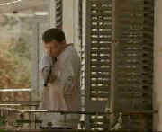

|
Assignment, The/B,B+ |
|
Columbia/1997/119m/ANA
1.85,PS.1.33
|
While it may not succeed on all counts, The
Assignment is a very pleasant surprise. With it's beautifully photographed opening sequences,
the filmmakers may create too much anticipation for the look of the film When the film sets its
action in motion, the pacing is rapid, but during the extended training session, the plotting is
slow going and frequently as thick as porridge.
One of the nicest aspects of The Assignment is its ability to
surprise. Not fool, but surprise. I don't think it ever cheats in this device and the
pay-offs are thoroughly satisfying. In a way the director is weaving his own spider web in which to
catch viewers. 
While on shore leave in Israel, US Naval Officer Annibal Ramirez is
mistaken for International terrorist Carlos the Jackal. Ramirez is into custody and brutally
interrogated by Israeli Intelligence. When the truth about his identity is revealed, CIA operative
Jack Shaw sees an opportunity to lay a trap to take down the notorious Jackal. While the family man
Ramirez is reluctant to agree to Shaw's pleas for help, Shaw is unrelenting and before he knows it
Ramirez is swept into a harrowing and often hard-to-believe regimen of training and indoctrination.
Aidan Quinn, certainly not known for action
roles, acquits himself very nciely in the dual roles of Carlos The Jackal and Navy officer Annibal
Ramirez. When Ramirez is impersonating The Jackal, Quinn manages to inject an ambivalence about his
own person which works very well within the story structure. Donald Sutherland has a meaty role as
CIA agent Jack Shaw, but he chews up the scenery a bit much. It's more a function of the writing
than the performance since Shaw's character is very one-dimensional. Ben Kingsley seems out of
place as the Israeli intelligence agent.
There's a slight unevenness to the film elements that leaves the DVD
wanting some extra punch. Still, it's very clean and sharp and apart from a bit of minor grain in
some scenes, there are no obvious criticisms. The Dolby 5:1 Digital sound is very dynamic with
powerful explosions and bedroom details equally alive. |
|
|
|


Apocalypse Now is Coppola's distorted vision of war now on DVD in
gorgeous anamorphic images.

Tucker: The Man and His Dream is beautifully filmed with loving attention to detail.

Selections from the feature archive include articles on Akira Kurosawa,
Frank Darabont, Blonde Bimbos, Hollywood
Street Gangs, or Vietnam:
The Hollywood Pariah, and many more....
Sturges Emerges
Preston Sturges was Hollywood's resident comic genius for more than a decade. His movies are
timeless. Click on his image to read all about it.
 Why
do Al Pacino, Gene Hackman, Pat O'Brien and Goldie Hawn fall into a select group of actors? Find
out more by clicking the Hollywood
on the Sidelines symbol. Why
do Al Pacino, Gene Hackman, Pat O'Brien and Goldie Hawn fall into a select group of actors? Find
out more by clicking the Hollywood
on the Sidelines symbol.

Movie Rage: Death in the Aisles
Everyone knows what it feels like to get angry at the
movies these days. Here's a humorous but not so delightful view of big screen misery.
 
DVDPlanet is the DVD
incarnation of legendary laser retailer Ken Crane's. Deep discounts and serious service.

Elegant DVD portal with news, reviews, links and information
galore.

Many movie related links in an easy interface. You can even rate
the sites.

Great site for DVD followers. Lots of
information, some speculation, opinion, and reviews all bundled in a sparkling interface.
|